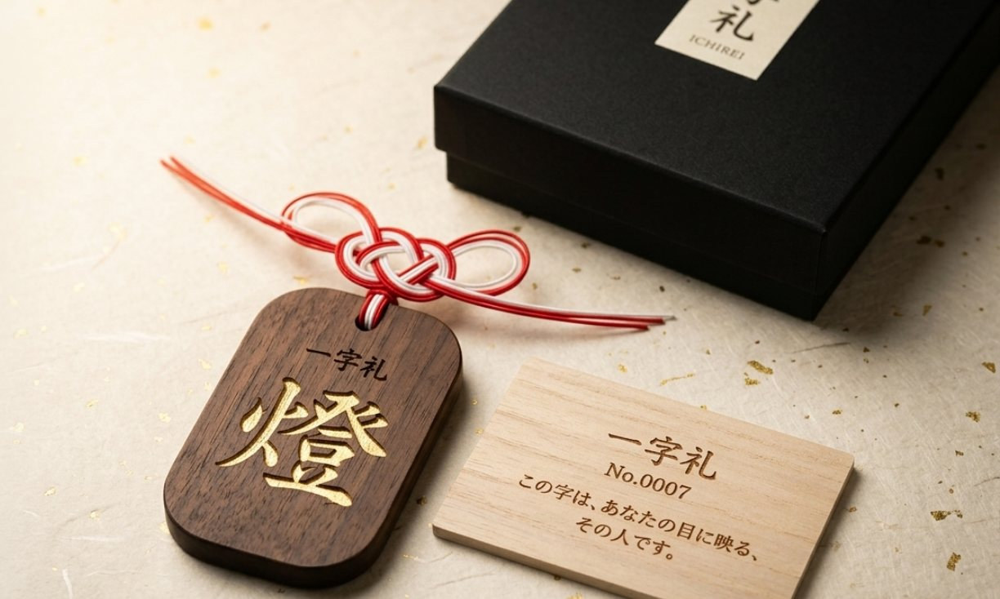
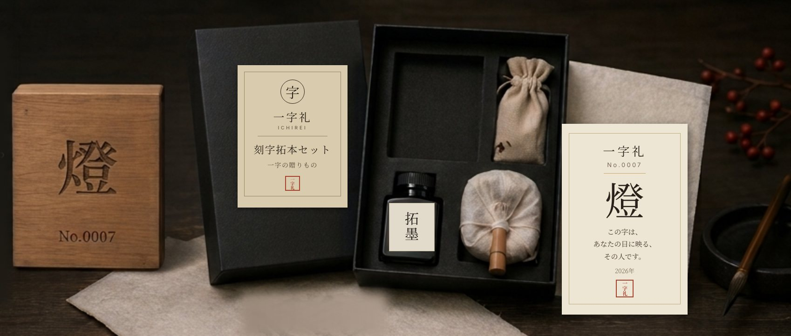

 Simple¥9,800 Walnut tag, character carved and finished in gold leafRed-and-white mizuhiki cordBilingual certificate cardGift box, ready to give Start with Simple
 Standard Make it together¥18,850 Character carved into a wooden blockRubbing ink, tampo and washi: print the character togetherBilingual certificate cardPouch and gift box Start with Standard